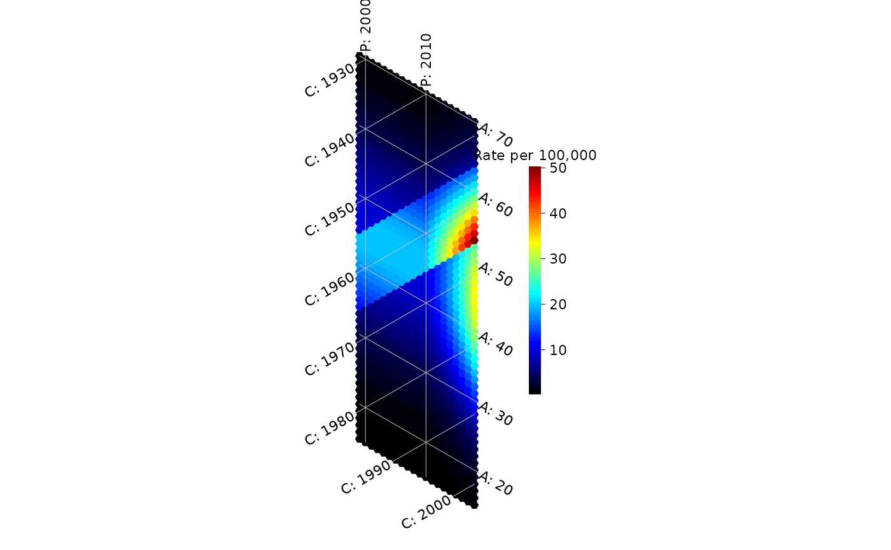

Generates a matrix of rates from a log-linear age-period-cohort model, $$\log \mu_{ap} = \log(\mathrm{baseline}) + f(a) + g(p) + h(p - a),$$ where \(f\), \(g\) and \(h\) are the age, period and cohort effects on the log scale (log rate ratios). Use it to see how each effect, alone or combined, looks on a hexamap or a Lexis diagram. Optionally adds Poisson noise for a given population size.
Usage
simulate_apc(
ages,
periods,
age_effect = NULL,
period_effect = NULL,
cohort_effect = NULL,
baseline = 10,
population = NULL,
per = 1e+05
)Arguments
- ages, periods
Numeric vectors of ages and periods.
- age_effect, period_effect, cohort_effect
Effects on the log scale:
NULLfor none, a function of age, period or cohort (birth year,period - age) returning log rate ratios, or a numeric vector with one value per age, period or cohort. Cohort vectors are matched tosort(unique(outer(periods, ages, "-"))).- baseline
Rate when all effects are 0, in units of
per.- population
NULLfor expected rates without noise, or the population at risk in each cell (a number or an age-by-period matrix), used to draw Poisson counts.- per
Rates are expressed per
perpersons.
Value
A numeric matrix of rates per per, with ages as rows, periods as
columns and the ages and periods as dimnames. With population, the
simulated counts and population are attached as attributes counts
and population.
Details
Note that linear trends in age, period and cohort cannot be separated
(cohort = period - age): for example, age_effect = function(a) 0.02 * a
with period_effect = function(p) 0.02 * p gives the same rates as
cohort_effect = function(c) 0.02 * c with
age_effect = function(a) 0.04 * a. Visual displays reveal departures
from linearity, not the linear components.
Examples
ages <- 15:70
periods <- 1999:2018
# a peak at age 45, a surge after 2010, and a high-risk 1955-1965 cohort
rates <- simulate_apc(ages, periods,
age_effect = function(a) -((a - 45) / 15)^2,
period_effect = function(p) 0.15 * pmax(p - 2010, 0),
cohort_effect = function(c) ifelse(c >= 1955 & c <= 1965, 0.7, 0))
hexamap(rates, scale_units = "Rate per 100,000")

# with Poisson noise for 100,000 persons per cell
set.seed(1)
noisy <- simulate_apc(ages, periods, age_effect = function(a) -((a - 45) / 15)^2,
population = 1e5)
head(attr(noisy, "counts")[, 1:5])
#> 1999 2000 2001 2002 2003
#> 15 0 0 0 1 1
#> 16 0 0 0 0 0
#> 17 0 0 0 0 0
#> 18 1 1 0 1 0
#> 19 0 0 1 1 1
#> 20 2 0 3 1 0